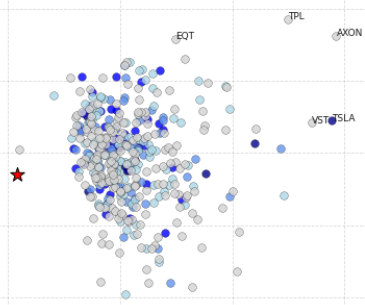
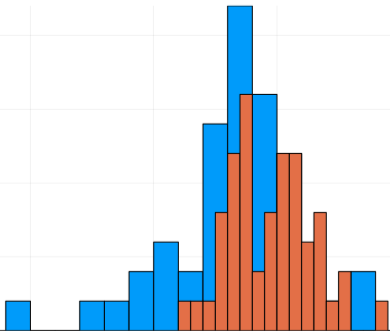

Research
Designed and backtested a dynamic volatility-based hedge for equity portfolios using VIX-linked instruments during macro-driven stress regimes.
Implemented high-performance Monte Carlo pricing algorithms for exotic options in C++ and CUDA, achieving over 100× speedup versus CPU baselines.

Studied covariance shrinkage techniques for mean–variance portfolio optimization and evaluated their out-of-sample risk–return performance.

Developed a reusable library of numerical analysis and Monte Carlo algorithms with emphasis on stability, convergence, and reproducibility.
Conducted undergraduate thesis research on intersection theory and Schubert calculus, culminating in a defended thesis presentation.